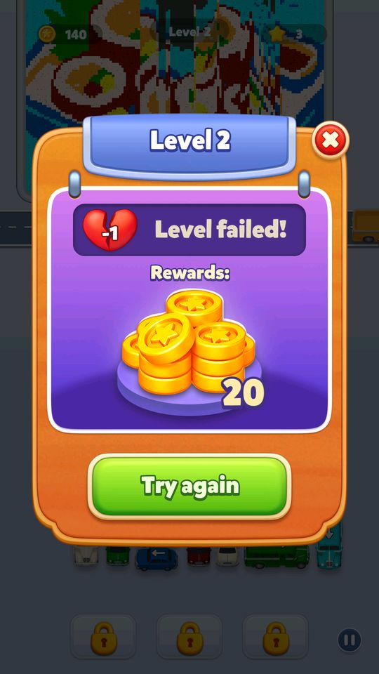

Màn trước level & booster đầu
Khung m8 có sẵn một popup «Select Boosters» trước mỗi level (tên level, nhãn Normal/Hard/Super Hard, 3 booster đầu trận chọn bằng coin hoặc QC, thanh chuỗi thắng, nhãn…
Mô tả
- Khung m8 có sẵn một popup «Select Boosters» trước mỗi level (tên level, nhãn Normal/Hard/Super Hard, 3 booster đầu trận chọn bằng coin hoặc QC, thanh chuỗi thắng, nhãn hệ số sự kiện).
- Trong Jam Bus 41.0 popup này bị tắt: hai hàm dựng cửa sổ (createWinStreakWindow, createNoStreakWindow) chỉ kết thúc task «进入游戏成功» nên bấm Play là vào ván ngay.
- Phần PrestartSystem còn chạy thật là: task kiểm tra mạng (popup «Free Life» khi hết mạng), trang «Level Failed!» sau khi thua/bỏ (kèm chọn booster cho lượt chơi lại) và popup «tiếp tục ván dở».
- Với designer, đây là ví dụ cắt bớt ma sát: bỏ một bước bấm trước mỗi ván, dồn booster vào trong ván.
Thiết kế chi tiết
Tóm tắt thiết kế
Code Khung m8 có popup trước level đầy đủ (tên level, nhãn Normal/Hard/Super Hard, 3 booster đầu trận mua bằng coin/QC, thanh chuỗi thắng, nhãn hệ số). Trong 41.0 cả hai hàm dựng nó (createWinStreakWindow, createNoStreakWindow) chỉ gọi finishCurrentTask(«进入游戏成功») → không bao giờ hiện.
Code Phần còn chạy: task mạng trước level (popup «Free Life» khi hết mạng), trang «Level Failed!» sau khi thua/bỏ — nơi duy nhất còn hàng 3 booster — và popup «返回游戏提示» (Continue/Restart) khi mở app ở nhóm AB 90/56.
CodeAPK Booster đầu trận của template là búa («Complete 4 Sets Of Eliminations»), × 2 sao («Double Your Star Rewards!»), +60 giây, mã loại 9/10/11; level mở là biến «Unlocked at Level #!1». Live 13/11 Kho của máy snapshot: mỗi loại 2.
2 sao («Double Your Star Rewards!»), +60 giây, mã loại 9/10/11; level mở là biến «Unlocked at Level #!1». Live 13/11 Kho của máy snapshot: mỗi loại 2.
Nhận định Ba booster này là của template sort/thời gian, không khớp booster Bus — có thể là lý do studio tắt popup.
Code Khi bấm Play, SandBusGameManager::createGame chốt bàn, tranh, màu và sức chứa từng xe trước lượt chạm đầu — popup booster (nếu bật) không ảnh hưởng phân màu.
Luồng người chơi từng bước
- Bấm PlayNgười chơiCode
onBeforeStartTasksOuter: task «生命系统_进入游戏前» rồi «连胜系统_进入游戏前». - Hết mạngGiao diệnCodeAPK
createNoMoreLifeWindow: «Life Insufficient» / «Free Life», số mạng, nút «Use Free Life», đồng hồ hồi, nút dùng lượt miễn phí / mua (chi tiết ở Lives). - Popup booster bị bỏ quaClientCodeTask chuỗi thắng kết thúc ngay «进入游戏成功» → loading → ván.
- Level Failed! (sau thua/bỏ)Giao diệnCodeAPK
createAfterFailWindow: «Level #!1», «Level failed!», «Rewards:», hàng 3 booster có đếm ngược (startPropCountDown), nút «Try again» (.lan key11).
Trang Level failed! ở level 2 chỉ có −1 mạng, Rewards  20 coin và Try again — chưa có hàng 3 booster (booster còn khoá) (playtest 15/11, level 2)
20 coin và Try again — chưa có hàng 3 booster (booster còn khoá) (playtest 15/11, level 2) - Mua boosterNgười chơiCodeAPK«Get More»: coin (
consumeCoin) hoặc QC vị trí 2;addPropCount(type|8). Chưa mở: «Unlocked at Level #!1». - Mở app: tiếp tục vánGiao diệnCodeNhóm 90/56: «返回游戏提示» («Continue» / «Restart»); board không lưu ván nên thực tế không có ván để tiếp (suy luận).

Thành phần PrestartSystem: chạy hay không ở 41.0
| Thành phần | Layout | Trạng thái |
|---|---|---|
| Popup Select Boosters (có/không chuỗi thắng) | …_弹窗_关卡进入_连胜已解锁 / 未解锁 | Tắt (chỉ finishCurrentTask) |
| Popup hết mạng | …_弹窗_生命补充 | Chạy (task mạng) |
| Trang Level Failed! | …_弹窗_游戏失败 (type 2: _删除体力图标) | Chạy (sau thua/bỏ) |
| Popup mua booster | …_弹窗_道具购买 («Get More») | Từ trang Level Failed |
| Thông báo booster | …_全屏反馈文本 | Chạy |
| Popup tiếp tục ván | …_弹窗_返回游戏提示 | Mở app, nhóm 90/56 |
| Hướng dẫn / chi tiết chuỗi thắng | …_教学界面_连胜模块教学 / …_连胜机制详情 | Không thấy đường mở (suy luận) |
CodeAPK
Booster đầu trận của template
| Mã | Booster | Mô tả (layout) | Kho live 13/11 |
|---|---|---|---|
| 9 | Búa (锤子) | Complete 4 Sets Of Eliminations | 2 |
| 10 | ×2 sao (双倍星星) | Double Your Star Rewards! | 2 |
| 11 | +giờ (加时间) | Extend the time by 60 seconds | 2 |
Code m8GamePrestartAdapter::addOnePropCount (type|8); APK OSG_游戏开始前模块_弹窗_道具购买; Live 13/11 props_data preHammer/preDoubleStar/preAddTime. Thứ tự mã ↔ booster là suy luận.
Vận dụng cho game khác
- Bỏ popup trước level ở game có nhịp ván ngắn: một lần bấm ít hơn mỗi ván, booster dồn vào trong ván nơi người chơi thấy rõ mình đang kẹt.
- Giữ hàng booster ở trang «Level Failed!» — lúc người chơi vừa thua là lúc booster đầu trận có giá trị cảm nhận cao nhất.
- Khi tái dùng khung, tắt bằng cách cho task «hoàn thành ngay» thay vì gỡ task: chuỗi vẫn nguyên, AB có thể bật lại.
- Nhận định Rủi ro: tắt popup làm mất chỗ bán booster đầu trận và chỗ hiển thị chuỗi thắng trước ván; cần điểm hiển thị thay thế (nút Play có nhãn «winning»).
Ảnh cần chụp (4) — 1 ảnh đã gắn
Chụp vào screens/deep_1113/PreLevel/ rồi ghi tên file vào flow[].shots.
- Hết mạng: Popup Free Life khi bấm Play lúc 0 mạng
- Level Failed! (sau thua/bỏ): Trang Level Failed! với hàng 3 booster
- Mua booster: Popup Get More từ trang Level Failed
- Mở app: tiếp tục ván: Popup tiếp tục ván khi mở app (nếu xuất hiện)
Bảng tổng hợp mọi tính năng đã làm chi tiết: JamBus_ThietKeChiTiet.xlsx.
Mở khóa & điểm vào
Task mạng chạy từ level 1 nhưng m8GameNotify::onBeforeStartTasksOuter bỏ qua toàn bộ chuỗi khi level ≤ ngưỡng +0x50 (suy luận: số level hướng dẫn = 1 với nhóm AB 90). Level mở booster đầu trận là biến («Unlocked at Level #!1» trong OSG_游戏开始前模块_多语言文件.lan; giá trị lấy qua getLastUnlockPropLevel = thông tin booster 0xb, không có số trong client).
Điểm vào:
- Nút Play trên Home (chuỗi «游戏外开始前任务链»)
- Try again sau khi thua / bỏ (trang «Level Failed!»)
- Mở app khi isContinueWndEnable (popup «返回游戏提示»)
Cách hoạt động
- Bấm Play → m8GameNotify::onBeforeStartTasksOuter dựng TaskList gồm task mạng (m8GamePrestartAdapter::createLifeTask → PrestartSystem::createLifeTask «生命系统_进入游戏前») và task chuỗi thắng (createWinStreakTask «连胜系统_进入游戏前»).
- Task mạng: còn mạng thì qua; hết mạng thì PrestartSystem::createNoMoreLifeWindow mở «OSG_游戏开始前模块_弹窗_生命补充» (số mạng hiện tại, đồng hồ hồi, nút dùng mạng miễn phí / mua bằng coin) — logic mạng thuộc Lives.
- Task chuỗi thắng gọi createWinStreakWindow (đang có chuỗi) hoặc createNoStreakWindow; cả hai chỉ gọi TaskPtr::finishCurrentTask («进入游戏成功») nên popup «Select Boosters» (layout «…_弹窗_关卡进入_连胜已解锁/未解锁») không bao giờ hiện.
- Booster đầu trận vẫn còn đường đi gián tiếp: m8GamePrestartAdapter::setPrelevelItemSelectArr ghi danh sách loại 9/10/11 vào m8GameProtocol::setPrelevelItemSelectVector, m8GameBoardTemplate::getBoostOutsideUsed đọc lại khi bắt đầu.
- Sau khi thua hoặc bỏ, PrestartSystem::createAfterFailWindow dựng trang «Level Failed!» với tên level, độ khó, hàng 3 booster và bắt đầu đếm ngược booster có hạn (startPropCountDown).
- Popup «返回游戏提示» (Continue / Restart) do createContinueWindow dựng khi mở app ở nhóm AB 90/56 — nhưng ván không khôi phục được (m8GameBoardTemplate::isCanRecover = 0).
Số liệu chính
| Chỉ số | Giá trị | Nguồn |
|---|---|---|
| Mã vị trí QC nhận booster | 2 | video placement (booster) · code const |
Use case (10)
Bấm vào từng use case để mở. Mở/đóng tất cả
UC-01 Chuỗi trước level khi bấm Play
Các bước- m8GameNotify::onBeforeStartTasksOuter: TaskList «游戏外开始前任务链»
- m8GamePrestartAdapter::createLifeTask → PrestartSystem::createLifeTask
- m8GamePrestartAdapter::createWinStreakTask → PrestartSystem::createWinStreakTask
- Thành công → «所有前置任务都成功后,通知各模块开始游戏» → m8GamePrestartAdapter::startGame → loadingBeforeStartGame(false)
| Actor | Player |
|---|---|
| Trigger | Bấm Play |
| Điều kiện | Level > ngưỡng +0x50 |
| Kết quả | Vào loading rồi ván chơi |
| Quy tắc / số liệu | Thất bại: «生命进入游戏失败» / «连胜进入游戏失败» |
| Evidence | m8::m8GameNotify::onBeforeStartTasksOuter; m8::m8GamePrestartAdapter::createLifeTask; PrestartSystem::createLifeTask; PrestartSystem::createWinStreakTask; m8::m8GamePrestartAdapter::startGame |
UC-02 Popup chọn booster đầu trận bị bỏ qua
Các bước- PrestartSystem::createWinStreakWindow → TaskPtr::finishCurrentTask(«进入游戏成功»)
- PrestartSystem::createNoStreakWindow → TaskPtr::finishCurrentTask(«进入游戏成功»)
| Actor | System |
|---|---|
| Trigger | Task chuỗi thắng chạy |
| Điều kiện | — |
| Kết quả | Không có màn «Select Boosters»; vào ván ngay |
| Quy tắc / số liệu | Layout «OSG_游戏开始前模块_弹窗_关卡进入_连胜已解锁/未解锁» còn trong gói nhưng không được mở |
| Evidence | PrestartSystem::createWinStreakWindow; PrestartSystem::createNoStreakWindow |
UC-03 Hết mạng khi vào level
Các bước- PrestartSystem::createNoMoreLifeWindow: layout «…_弹窗_生命补充», P-当前生命数, «生命补充弹窗进入»
- PrestartSystem::updateCoinUI: P-持有金币数, P-是否限时无限生命, P-生命是否满, P-剩余生命数, P-可获得免费生命数
- Đóng → PrestartSystem::destoryNoMoreLifeWindow (dừng «购买生命倒计时»)
| Actor | Player |
|---|---|
| Trigger | Task mạng, mạng = 0 |
| Điều kiện | Không có mạng vô hạn |
| Kết quả | Mua/nhận mạng hoặc ở lại Home |
| Quy tắc / số liệu | Giá, số mạng: xem Lives |
| Evidence | PrestartSystem::createNoMoreLifeWindow; PrestartSystem::updateCoinUI; PrestartSystem::destoryNoMoreLifeWindow |
UC-04 Ghi booster đầu trận vào ván
Các bước- PrestartSystem::setPrelevelItemSelect cập nhật lựa chọn
- m8GamePrestartAdapter::setPrelevelItemSelectArr: bit → loại 9/10/11 → m8GameProtocol::setPrelevelItemSelectVector
- m8GameBoardTemplate::getBoostOutsideUsed đọc getPrelevelItemSelectVector lúc bắt đầu
| Actor | System |
|---|---|
| Trigger | Chọn booster (trang Level Failed hoặc nguồn khác) |
| Điều kiện | — |
| Kết quả | Booster được kích hoạt đầu ván |
| Quy tắc / số liệu | Loại 9/10/11 = booster 1/2/3 cộng 8 (addOnePropCount dùng type | 8) |
| Evidence | PrestartSystem::setPrelevelItemSelect; m8::m8GamePrestartAdapter::setPrelevelItemSelectArr; m8::m8GamePrestartAdapter::getPrelevelItemSelectArr; m8::m8GameBoardTemplate::getBoostOutsideUsed |
UC-05 Mua / nhận booster đầu trận
Các bước- PrestartSystem::createPurchasePropWindow «Get More» (P-道具类型: 锤子/双倍星星/加时间)
- Coin: m8GamePrestartAdapter::consumeCoin; QC: tryShowOnePropVideoAD / tryShowAllPropVideoAD (mã vị trí 2)
- m8GamePrestartAdapter::addOnePropCount(type 1–3) → m8GameProtocol::addPropCount(type | 8, n, 2, 0)
- PrestartSystem::updatePrelevelItemAfterBuy
| Actor | Player |
|---|---|
| Trigger | Bấm booster đang thiếu |
| Điều kiện | Booster đã mở |
| Kết quả | Số booster tăng |
| Quy tắc / số liệu | Text .lan: «Complete 4 Sets Of Eliminations», «Double Your Star Rewards!», «Extend the time by 60 seconds»; không có QC → «No Ads Available» |
| Evidence | PrestartSystem::createPurchasePropWindow; m8::m8GamePrestartAdapter::consumeCoin; m8::m8GamePrestartAdapter::tryShowOnePropVideoAD; m8::m8GamePrestartAdapter::addOnePropCount; PrestartSystem::updatePrelevelItemAfterBuy |
UC-06 Thông báo trạng thái booster
Các bước- PrestartSystem::createPromptWindow: P-道具解锁关卡数; nhánh 未解锁提示, 道具1/2/3已激活提示, 无可用广告提示, 无免费次数提示
| Actor | System |
|---|---|
| Trigger | Bấm booster chưa mở / đã kích hoạt / hết lượt |
| Điều kiện | — |
| Kết quả | Text toàn màn: «Unlocked at Level #!1», «Hammer prop activated», «Double Stars Activated», «The time item has been activated», «No Ads Available», «No Free Tries» |
| Evidence | PrestartSystem::createPromptWindow; m8::m8GamePrestartAdapter::getLastUnlockPropLevel |
UC-07 Trang Level Failed sau khi thua/bỏ
Các bước- PrestartSystem::createAfterFailWindow: layout «OSG_游戏开始前模块_弹窗_游戏失败» (templateType 2 → biến thể khác), P-关卡数, P-关卡难度 (< 3)
- PrestartSystem::startPropCountDown đếm ngược booster có hạn («道具1/2/3倒计时»)
- Đóng: destoryAfterFailWindow («失败弹窗延时删除»)
| Actor | System |
|---|---|
| Trigger | Chuỗi thua/bỏ đi tới bước Try again |
| Điều kiện | — |
| Kết quả | «Level Failed!», «Rewards:», hàng 3 booster, nút Try again |
| Quy tắc / số liệu | Booster vô hạn theo thời gian hiển thị bằng getTimeString (%d:0%d / %d:%d) |
| Evidence | PrestartSystem::createAfterFailWindow; PrestartSystem::startPropCountDown; PrestartSystem::destoryAfterFailWindow; PrestartSystem::getTimeString |
UC-08 Popup tiếp tục ván dở
Các bước- m8GameAdapter::_onNavigatorFirstEnterDone
- PrestartSystem::createContinueWindow: «OSG_游戏开始前模块_弹窗_返回游戏提示» (继续游戏按钮, 重玩游戏按钮)
| Actor | System |
|---|---|
| Trigger | Mở app, chuỗi «显示继续窗口» |
| Điều kiện | RedABTest::isContinueWndEnable (nhóm 90 hoặc 56) |
| Kết quả | Chọn tiếp tục hoặc chơi lại |
| Quy tắc / số liệu | Board Bus không khôi phục ván (isCanRecover = 0) → thực tế không có ván để tiếp (suy luận) |
| Evidence | m8GameAdapter::_onNavigatorFirstEnterDone; PrestartSystem::createContinueWindow; m8::m8GameBoardTemplate::isCanRecover |
UC-09 Hướng dẫn và chi tiết chuỗi thắng (template)
Các bước- PrestartSystem::createWinStreakTeachWindow («连胜模块教学进入», tay chỉ + mũi tên)
- PrestartSystem::createWinStreakInfoWindow («Winning Streak — Win levels without losing a life and gain extra time each level! Keep your winstreak!»)
- m8GamePrestartAdapter::setIsTeachShowed (thân rỗng)
| Actor | System |
|---|---|
| Trigger | Lần đầu gặp chuỗi thắng |
| Điều kiện | — |
| Kết quả | Không hiện vì popup trước level đã tắt (suy luận) |
| Quy tắc / số liệu | Live 13/11: winstr_data.winstrTeachShowed = false |
| Evidence | PrestartSystem::createWinStreakTeachWindow; PrestartSystem::createWinStreakInfoWindow; m8::m8GamePrestartAdapter::setIsTeachShowed |
UC-10 Chuẩn bị lõi khi vào level
Các bước- SandBusGameManager::createGame(N): ghi số level, bật chế độ cát
- Chọn bàn + tranh theo nhóm (LevelData)
- Phân màu & sức chứa xe (SandBusCarAllocator)
- Dựng tranh và đường vòng
| Actor | System |
|---|---|
| Trigger | FlowerCoreGame::onGameStarted |
| Điều kiện | Đã qua chuỗi trước level |
| Kết quả | Mọi quyết định «level này khó thế nào» được chốt trước lượt chạm đầu tiên; booster đầu trận (nếu bật) không đổi phân màu |
| Quy tắc / số liệu | Thời gian dựng level được đo cho 3 level đầu (getGameStartDuration) |
| Evidence | FlowerCoreGame::onGameStarted; SandBusGameManager::createGame; SandBusGameManager::_applyDynamicCarAllocation; SandBusGameManager::getGameStartDuration |
Cấu hình (12)
Gộp mọi nguồn: const trong pseudo-C của libMyGame.so, JSON/CSV giải mã trong APK (assets_dec/), storage key (MMKV / UserDefault), nhóm A/B, giá trị server / Firebase RC trong snapshot thiết bị 13/11/2026.
| Nguồn | Key | Kiểu | Giá trị | Ý nghĩa | Nơi định nghĩa |
|---|---|---|---|---|---|
| code const | prelevel item types | int | 9, 10, 11 (= booster 1–3 | 8) | Mã booster đầu trận | m8GamePrestartAdapter::setPrelevelItemSelectArr / addOnePropCount |
| code const | video placement (booster) | int | 2 | Mã vị trí QC nhận booster | m8GamePrestartAdapter::tryShowOnePropVideoAD / tryShowAllPropVideoAD |
| code const | task names | string | 生命系统_进入游戏前; 连胜系统_进入游戏前; 进入游戏成功 | Task trước level | PrestartSystem |
| AB test | RedABTest::isContinueWndEnable | bool | nhóm 90, 56 | Popup tiếp tục khi mở app | RedABTest |
| storage key | goods_merge_data_center_in_game_20241206.props_data | json | preHammer 2, preDoubleStar 2, preAddTime 2, timePreHammer 0, timePreDoubleStar 0, timePreAddTime 0, isShowPre*Free true (live 13/11) | Kho booster đầu trận của template | MMKV sync |
| storage key | goods_merge_data_center_in_game_20241206.winstr_data | json | winstrCounts 0, winstrTeachShowed false (live 13/11) | Chuỗi thắng | MMKV sync |
| asset | OSG_游戏开始前模块_弹窗_关卡进入_连胜已解锁.redream | layout | «Level 999», «Select Boosters», «Super Hard», 道具按钮1–3, 连胜任务栏, 倍数标签, 动画 theo 普通/困难/超困难 | Popup trước level (không dùng) | assets_dec |
| asset | OSG_游戏开始前模块_弹窗_生命补充.redream | layout | «Free Life», «Not enough times», «Free usage», «Sufficient Times», 生命恢复倒计时 | Popup hết mạng | assets_dec |
| asset | OSG_游戏开始前模块_全屏反馈文本.redream | layout | «No ads available», «Unlocked at level 6» (text xem trước; bản chạy dùng .lan «Unlocked at Level #!1») | Thông báo booster | assets_dec |
| asset | OSG_游戏开始前模块_弹窗_返回游戏提示.redream | layout | Level 999, 继续游戏按钮, 重玩游戏按钮 | Popup tiếp tục ván | assets_dec |
| asset | OSG_游戏开始前模块_多语言文件.lan (en) | plist | key2 «Level #!1»; key11 nút «Try again»; key16 «Select Boosters»; key17/18 «Hard»/«Super Hard»; key19 «Life Insufficient»; key20 «Free Life»; key29 «Use Free Life»; key30 «Sufficient Times»; key31 «Level failed!»; key32 «Rewards:»; key33/34 «Prompt» / «Do you want to continue playing?»; key22 «Continue»; key35 «Restart»; key7 «Winning Sprint Unlocked»; key3 «Complete the level and earn #!1 times the reward» | Văn bản UI của PrestartSystem (12 ngôn ngữ, không có tiếng Việt) | assets_dec |
| code const | consumeCoinByWinstreak | placement | addCoin(−n, placement 2) | Trừ coin cho tuỳ chọn mua ở màn trước level (gọi qua vtable; popup đang tắt nên thực tế không dùng — suy luận) | m8::m8GamePrestartAdapter::consumeCoinByWinstreak (disasm 0x1dc4a54) |
Giao diện (UI)
| Element | Class | Mục đích |
|---|---|---|
| Popup hết mạng | PrestartSystem | Mua/nhận mạng trước level |
| Trang Level Failed! | PrestartSystem | Chọn booster và thử lại |
| Popup Select Boosters | PrestartSystem | Có trong gói, bị tắt ở 41.0 |
| Popup tiếp tục ván | PrestartSystem | Continue / Restart khi mở app |
Storage keys
goods_merge_data_center_in_game_20241206 (props_data, winstr_data)
Chưa đọc được / ghi chú
- Ba booster đầu trận của template (búa, x2 sao, +60 giây) không khớp booster Bus (指定消除 / 小人刷新 / 重新排序); không rõ loại 9–11 còn tác dụng trong lõi Bus.
- Ngưỡng m8GameNotify +0x50 bỏ qua chuỗi trước level chưa xác định nguồn gán.
- Nội dung task mạng (khi nào mở popup hết mạng) nằm trong lambda, mô tả theo tên hàm.
Tính năng liên quan
Luồng level (vào→kết thúc) Mạng (thể lực) Vật phẩm hỗ trợ (booster) Chuỗi thắng Giữ chân khi bỏ level Thua & hồi sinh
Nguồn đã đọc
- pseudoc/PrestartSystem.c
- pseudoc/m8__m8GamePrestartAdapter.c
- pseudoc/m8__m8GameNotify.c
- assets_dec/OSG_游戏开始前模块_*.redream
- facts/runtime/live_1113 (MMKV)
- assets_dec/OSG_游戏开始前模块_多语言文件.lan